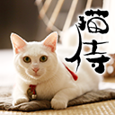
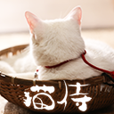
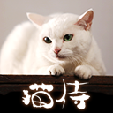
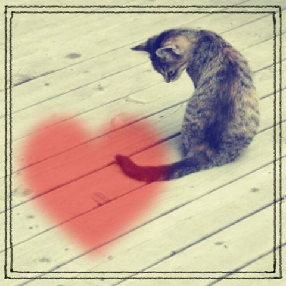

ねこcafe玉之丞について
ようこそ、ねこcafe"にじにじ"へ！ようこそ、ねこcafe"にじにじ"へ！ようこそ、ねこcafe"にじにじ"へ！ようこそ、ねこcafe"にじにじ"へ！ようこそ、ねこcafe"にじにじ"へ！うこそ、ねこcafe"にじにじ"へ！
ようこそ、ねこcafe"にじにじ"へ！ようこそ、ねこcafe"にじにじ"へ！ようこそ、ねこcafe"にじにじ"へ！ようこそ、ねこcafe"にじにじ"へ！ようこそ、ねこcafe"にじにじ"へ！ようこそ、ねこcafe"にじにじ"へ！ようこそ、ねこcafe"にじにじ"へ！
-

当店NO１の人気にゃんこの「玉之丞」です！！スタッフの紹介です。スタッフの紹介です。スタッフの紹介です。スタッフの紹介です。スタッフの紹介です。
-

当店NO１の食いしん坊にゃんこの「玉之丞」です！スタッフの紹介です。スタッフの紹介です。スタッフの紹介です。スタッフの紹介です。スタッフの紹介です。
-

当店NO１のお昼寝三昧にゃんこの「玉之丞」です！スタッフの紹介です。スタッフの紹介です。スタッフの紹介です。スタッフの紹介です。スタッフの紹介です。
CONCEPT
new!

かわいいにゃ、かわいいにゃ
cafeにじにじは、様々なバックグランドから来たねこのカフェです。cafeにじにじは、様々なバックグランドから来たねこのカフェです。cafeにじにじは、様々なバックグランドから来たねこのカフェです。
cafeにじにじは、様々なバックグランドから来たねこのカフェです。cafeにじにじは、様々なバックグランドから来たねこのカフェです。cafeにじにじは、様々なバックグランドから来たねこのカフェです。cafeにじにじは、様々なバックグランドから来たねこのカフェです。